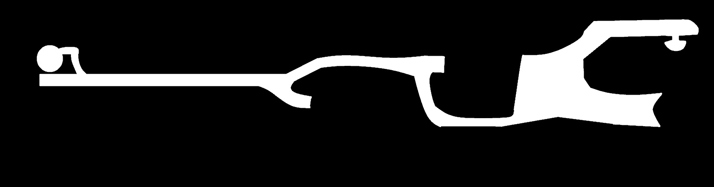

🏠 Accueil
📸 Galerie
⚙️
🌙
×
⚙️ Paramètres avancés
Taille de police:
Moyen
+
-

hors-ligne
Contrôles
Coordonnées GPS du point sélectionné :
▼ Trajet actuel
▼ Trajets sauvegardés
Effacer le trajet
Supprimer le dernier point
💾 Sauvegarder
Effacer les zones interdites
Réinitialiser les zones
Mode Édition: OFF